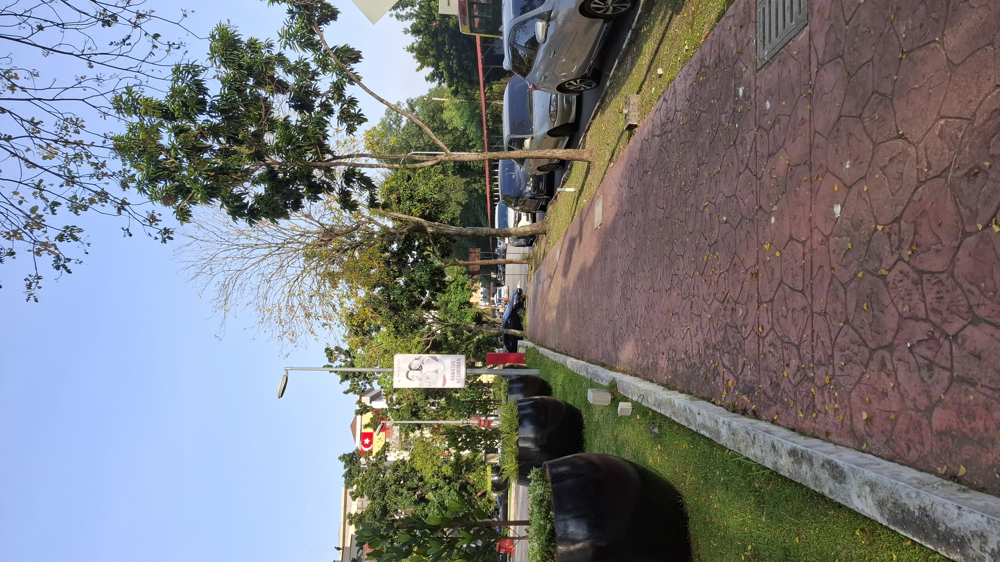

Jogging transforms with the seasons, offering a unique atmosphere and rhythm throughout the year. This page is a celebration of that journey — from the fresh energy of spring to the golden calm of autumn, the brightness of summer to the quiet of winter. Through a series of video clips submitted by our members, you’ll experience how each season shapes the mood, scenery, and connection we feel while jogging.
These clips capture not just the paths we run, but the moments of peace, clarity, and joy found along the way.

Thanks to the university’s international environment, we’re able to gather meaningful contributions from members across different countries. ♥